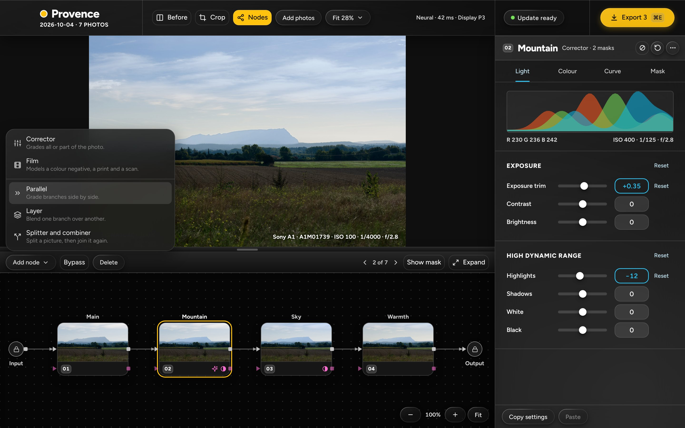
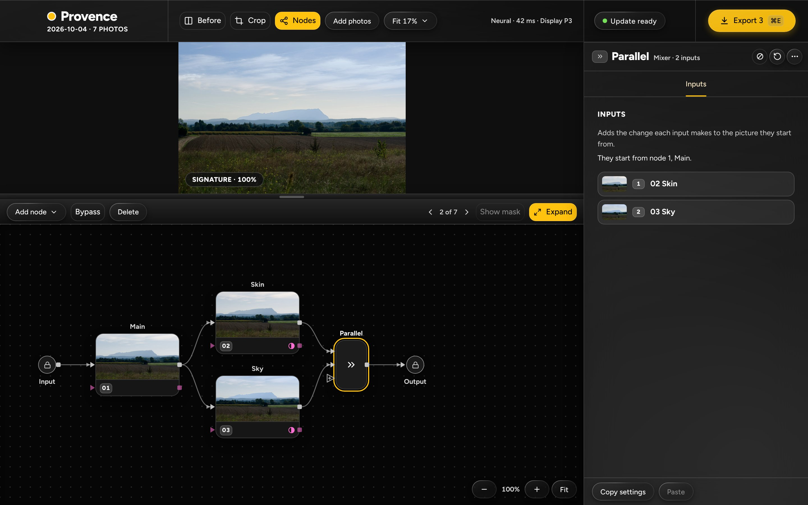
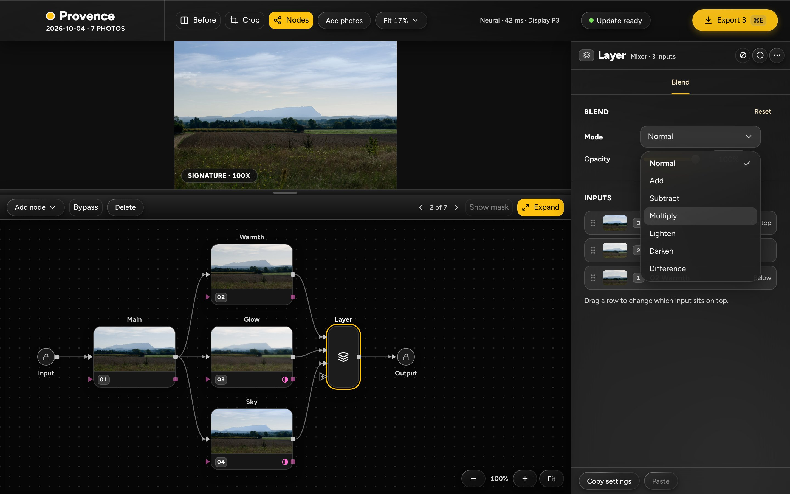
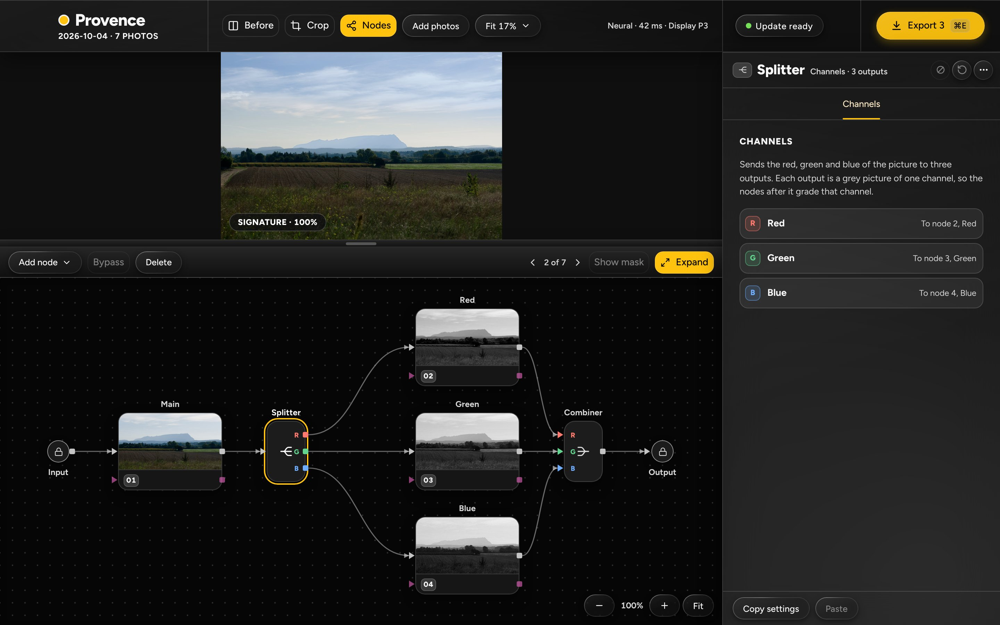
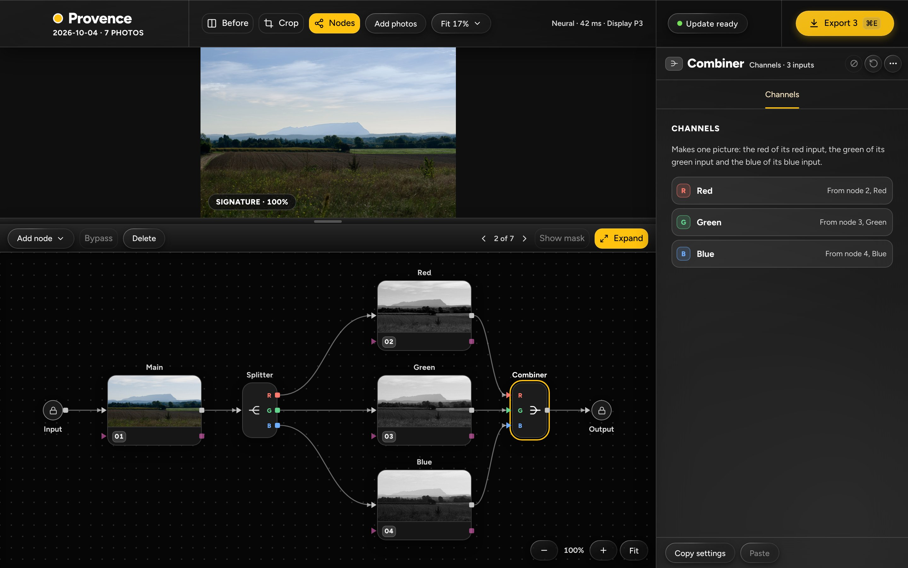
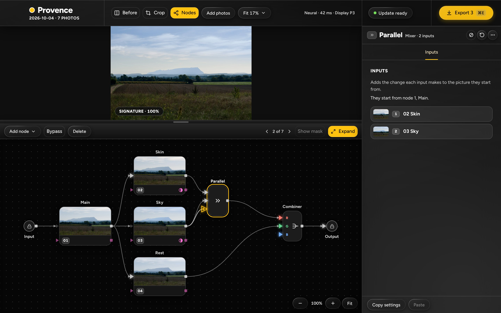
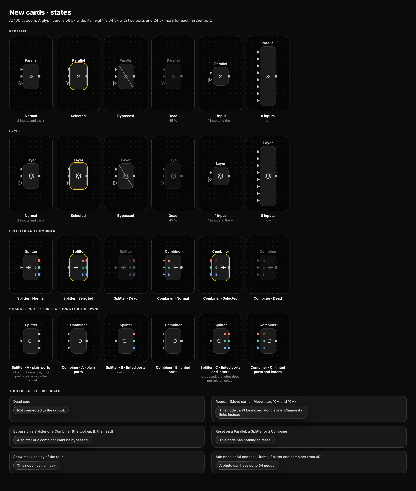

Add node menu, items live

The menu of src/screens/nodes/AddNodeMenu.tsx with Parallel, Layer and Splitter and combiner enabled (no "Later" tag), each with its line. Parallel is highlighted as under the keyboard. The graph behind it is Main, Mountain, Sky and Warmth; the panel is Mountain's.
- Order and icons as the app has them: Corrector, Film, a rule, then the three.
- The toolbar has no Graph · List switch and no Later tag (both gone since 2026-11-01).
Parallel, Inputs tab

Main feeds Skin and Sky (each with a mask); both feed a Parallel, which feeds the Output. The Parallel is selected: head "Parallel · Mixer · 2 inputs", the Inputs tab with what it does, where the inputs start from, and the two inputs without drag handles.
- Glyph card 56 × 88 px at 100 % zoom (two inputs and the + port: three ports).
- The "+" port under input 2. Bypass is on, Reset and Show mask are off.
Layer, Blend tab
Warmth, Glow and Sky on inputs 1, 2 and 3. The Layer is selected: the Blend card (Mode, Opacity) and the Inputs card from the top of the stack ("On top", "Below", drag handles). One tab, no Mask tab.
- Glyph card 56 × 112 px (three inputs and the +).
- The tab is yellow, as the Film node's are.
Layer, Mode menu open

The seven modes in the order of docs/25 §3.3, Normal ticked. The spec gives no line for a mode, so the menu has names only.
- Multiply is under the pointer.
Splitter and combiner, just added

The trio as Add node › Splitter and combiner places it after Main: Splitter, Red, Green and Blue correctors on three rows, Combiner. The Splitter is selected, with its Channels tab. The channel ports carry a tint and a letter (option C of the sheet).
- Bypass and Reset are off; Show mask is off.
Combiner selected

The same graph with the Combiner selected: head "Combiner · Channels · 3 inputs" and where each channel comes from.
Dragging a link onto +

A picture link dragged from Sky's output. Every picture input that may take it is lit (Skin, Rest, the Parallel's two inputs and its +, the Combiner's three inputs, the Output); the inputs upstream of Sky (Main and Sky) and every key port are dim. The + under the pointer is yellow.
Card states and refusal tooltips

Parallel and Layer normal, selected, bypassed, dead, with 1 input and with 8 inputs (no +); Splitter and Combiner normal, selected and dead; three options for the channel ports; the tooltip of each refusal.